Guida completa all'utilizzo di JW Time
JW Time 4.0 introduce molte funzioni nuove. Qui trovi solo un riepilogo per orientarti; il pannello Novità dentro l'app e la pagina dedicata raccolgono il dettaglio completo.
Al primo avvio JW Time mostra un wizard che raccoglie le impostazioni essenziali prima di aprire l'app. È il percorso consigliato per una nuova installazione, perché evita di dover cercare subito ogni opzione nei pannelli impostazioni.
Alla fine del wizard puoi aprire JW Time e completare solo le opzioni più avanzate, come Media, Server Web, Registrazioni e Backup.
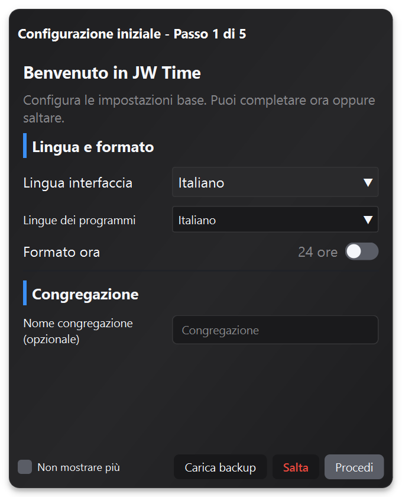
Se chiudi o salti il wizard, puoi configurare manualmente l'essenziale da Impostazioni e dalla finestra principale. Questa checklist serve anche come controllo veloce prima dell'adunanza.
Vai nella sezione 9 · Generale per lingua e formato orario, poi nella sezione 10 · Congregazioni se devi creare o selezionare un profilo. Controlla che la scaletta caricata corrisponda alla settimana e alla lingua desiderata.
Nella sezione 12 · Schermo seleziona i monitor corretti e attiva le finestre che userai. Per modificare l'aspetto del Contatempo vedi la sezione 5.3 · Personalizzare lo Schermo Contatempo.
Apri la sezione 4 · Finestra Media per verificare cantici, video e immagini della settimana. Le opzioni di cache, qualità e sottofondo sono nella sezione 13 · Media.
Usa la finestra principale per avviare i timer, inviare messaggi al Contatempo e aprire il pannello REC. Se registri le adunanze, verifica prima le opzioni nella sezione 16 · Registrazioni.
Se usi controllo remoto, QR o consultazione da browser, configura la sezione 15 · Connessione e Server. Per lavorare senza rete o trasferire configurazioni, controlla la sezione 17 · Pacchetti e backup offline.
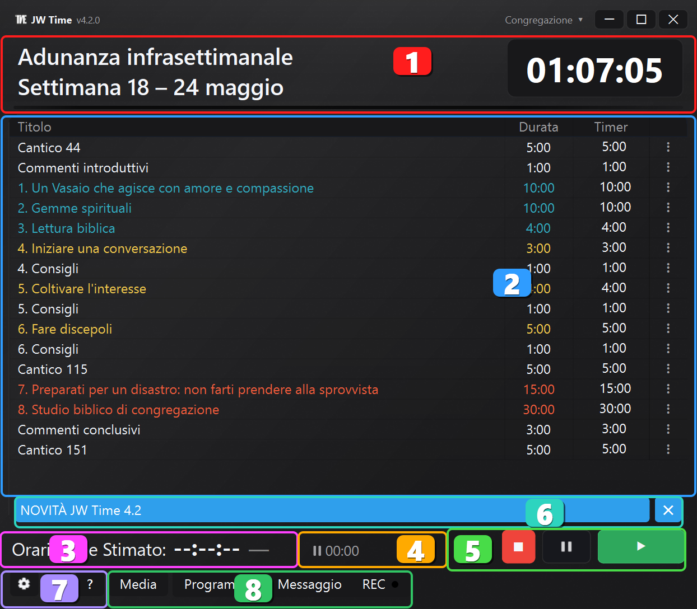
La schermata principale è il cuore dell'applicazione. Da qui puoi avviare, gestire e monitorare tutti i timer dell'adunanza, visualizzare le informazioni principali come il titolo della parte in corso, l'orologio e il tempo residuo, oltre a controllare messaggi e notifiche importanti.
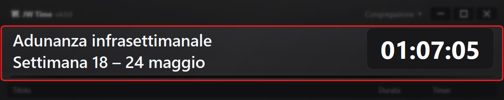
Nella riga superiore viene mostrato il titolo della parte in corso, mentre sotto è visualizzato l'orologio con l'ora corrente o, quando avvii un timer, il countdown del tempo rimanente. In formato 12 ore compare anche il suffisso AM/PM in dimensioni ridotte per migliorare la leggibilità.
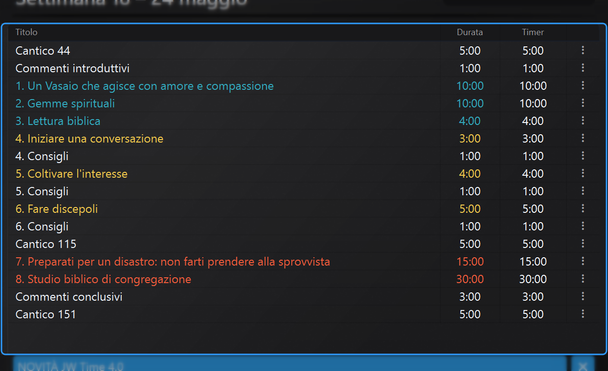
Elenca la scaletta dell'adunanza (titolo, durata, stato). Il contenuto si carica automaticamente in base al giorno selezionato: l'app riconosce se è Infrasettimanale o Fine Settimana e propone la scaletta corretta. Per i pulsanti e le azioni dettagliate vedi la sezione 3 · Manipolazione dei timer.
Se attivi Mostra colonna Fine nelle impostazioni generali, la tabella mostra anche a che ora terminerebbero la parte in corso e quelle successive. Non è un orario fisso della scaletta: è una proiezione aggiornata in tempo reale in base all'ora corrente, ai timer rimanenti e agli eventuali scostamenti accumulati.
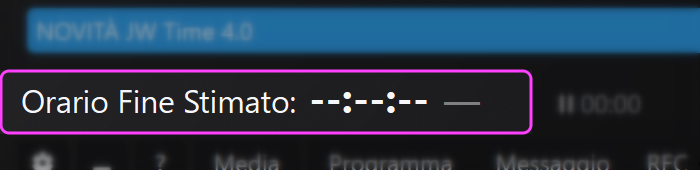
Mostra l'ora prevista di chiusura in base alla scaletta. Accanto compare lo scostamento:
+m:ss (giallo entro 1', rosso oltre) = ritardo
−m:ss (verde) = anticipo
L'orario e l'indicatore si aggiornano in tempo reale. Se sono attivi gli adattivi per Studio biblico / Torre di
Guardia, le durate vengono ricalcolate per rientrare nell'orario di chiusura.
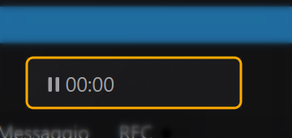
Contatore cumulativo hh:mm:ss delle pause tecniche/cambio oratore: somma il tempo in cui il timer è stato messo in pausa. Durante la pausa il timer della parte resta fermo mentre questo contatore aumenta. Un clic sull'indicatore azzera il totale.

Controlli per avviare, fermare e gestire i timer: Stop (rosso), Pausa, e Start/Successiva (verde). Il pulsante Pausa mette in pausa il timer della parte (il conteggio resta fermo) mentre il tempo pausa/cambio oratore continua ad aumentare. Per uscire dalla pausa, ripremi Pausa oppure passa alla parte successiva con Start/Successiva: il tempo accumulato viene registrato nel contatore di cui al punto 1.4.
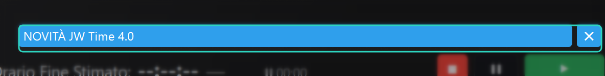
Quando ci sono comunicazioni ufficiali per l'app, nella Schermata Principale compare un riquadro/avviso "Notizie". Cliccandolo si apre il pannello con il riepilogo degli aggiornamenti.
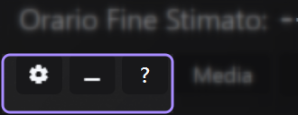
Pulsanti rapidi per aprire le impostazioni, ridurre o ripristinare la finestra e accedere all'aiuto. Sono separati dalle modalità operative per lasciare più chiara la riga inferiore.
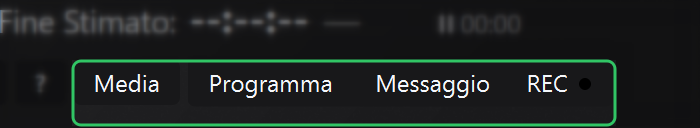
Da qui puoi passare alla finestra Media, alla gestione del Programma, ai Messaggi e al pannello REC. Il punto nero accanto a REC indica lo stato della registrazione.
Questa sezione illustra le principali operazioni di gestione dei timer — come aggiungere, modificare o eliminare voci — e l'uso dei comandi di avvio, salto e reset.
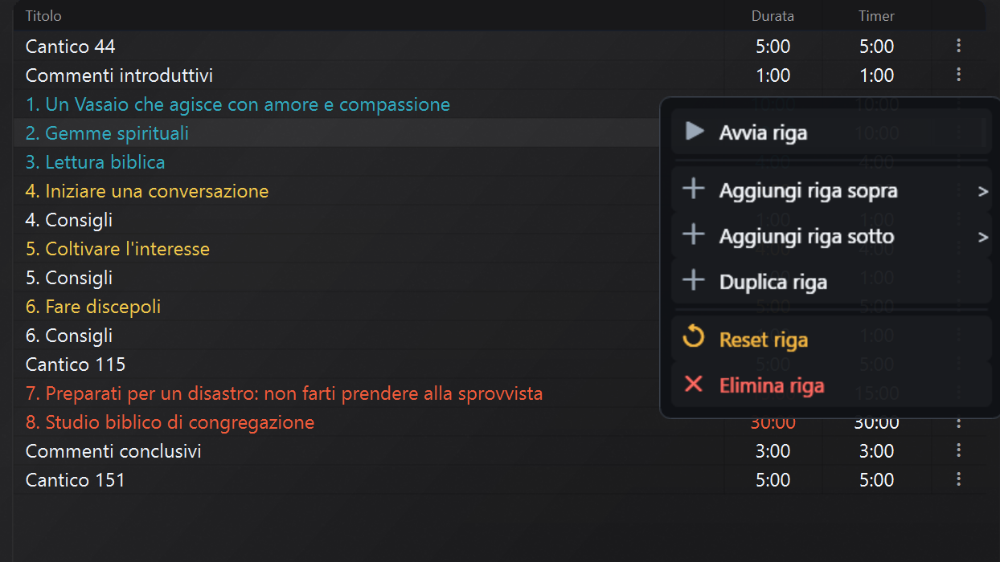
Il timer si aggiorna costantemente: il countdown principale in alto mostra il tempo rimanente della parte attiva, mentre la riga corrispondente resta evidenziata nella tabella. Il colore della barra superiore riprende il colore della parte in corso.
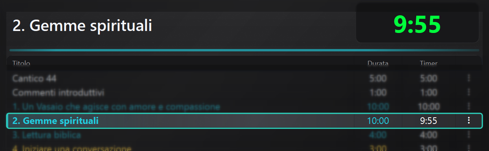
Se modifichi una durata o passi alla parte successiva, l'Orario Fine Stimato viene ricalcolato subito. Questo permette di controllare il delta anticipo/ritardo e il tempo accumulato per pause o cambi oratore senza aprire altri pannelli.
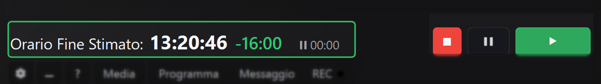
Se in Impostazioni sono attivi Studio biblico adattivo e/o Studio Torre di Guardia adattivo, l'app adatta dinamicamente la durata della parte selezionata per mantenere l'orario di chiusura dell'adunanza. L'adeguamento riguarda solo le parti con opzione attiva e può aumentare o ridurre automaticamente i minuti in base all'anticipo/ritardo accumulato. Nell'immagine la riga interessata viene isolata e il valore adattato viene evidenziato in arancione, così si capisce subito quale timer è stato corretto. Puoi sempre intervenire manualmente: l'adattivo ricalcola partendo dalla nuova situazione.
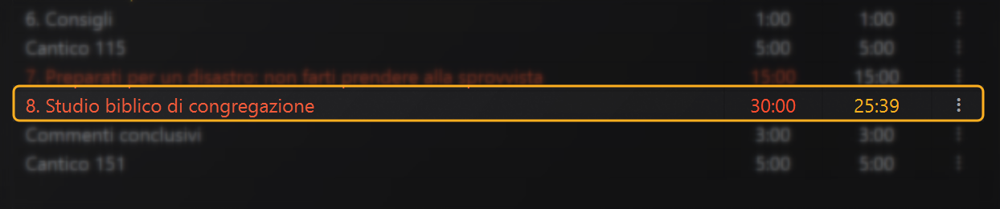
La finestra Media raccoglie i contenuti collegati alla settimana: cantici, video, immagini e riferimenti utili alla parte. Può aiutare l’operatore a preparare l’adunanza, controllare i contenuti disponibili e avviarli quando serve.
Nota sull’utilizzo: la finestra Media offre all’operatore uno strumento di supporto per preparare, controllare e gestire contenuti multimediali già disponibili. Il suo utilizzo pratico dipende dalle necessità locali e deve sempre avvenire in armonia con le indicazioni della congregazione e con le disposizioni. In caso di necessità tecnica, può anche essere usata come soluzione di supporto o di riserva.
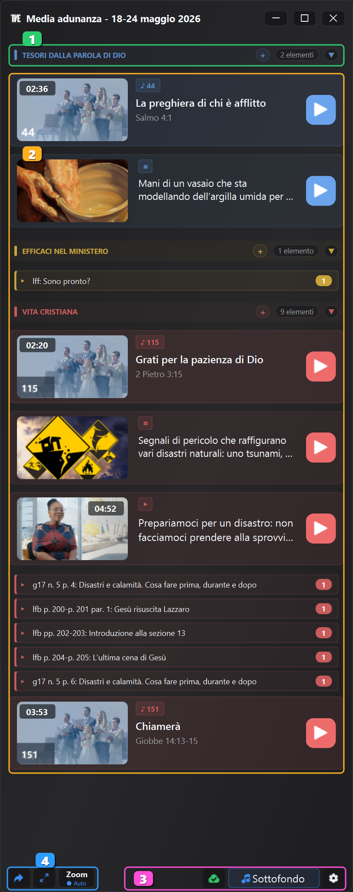
L'area 1 segnala quando i media ufficiali della settimana non sono ancora disponibili offline. Puoi scaricarli subito oppure rimandare. Lo stesso comportamento si può automatizzare dalle impostazioni sezione 13 · Media, attivando il download automatico dei media ufficiali. Sotto l'avviso trovi le sezioni della scaletta, con titolo colorato, contatore degli elementi e comandi rapidi.
Nota: il download dei media ufficiali richiede che la rete permetta a JW Time di accedere a jw.org e alle risorse usate per i media. Il download alternativo introdotto per i programmi non è disponibile per i media. Se router, firewall, DNS o filtri contenuti bloccano siti religiosi o l'accesso di JW Time, i media ufficiali potrebbero non essere scaricati; in quel caso puoi usare media già presenti offline o aggiungere file locali manualmente.
L'area 2 contiene schede con anteprima, titolo, riferimento e pulsante di avvio. I colori riprendono le aree della scaletta, così puoi individuare velocemente cantici, immagini, video e riferimenti collegati alla parte.
Dal menu contestuale puoi segnare manualmente un elemento come usato o non usato. Se l'opzione Attenua media già usati è attiva, i contenuti già usati restano riconoscibili con uno stile più discreto. Le finestre per scegliere video, audio e immagini ufficiali includono anche la modalità Globale, utile quando devi cercare fuori dalla categoria corrente.
L'area 3 raccoglie i comandi rapidi della finestra Media: contenuti scaricati, anteprima, sincronizzazione, sottofondo e impostazioni dedicate. Rimane in basso per essere raggiungibile anche quando l'elenco è lungo.
L'area 4 raccoglie i comandi Zoom della finestra Media. Sono pensati per chi mostra i media anche in videoconferenza e lavora con lo Schermo Pubblico sul monitor della sala.
Prima di usare questi tasti, configura in Zoom una scorciatoia globale per la condivisione schermo e inserisci la stessa combinazione nella sezione 14 · Zoom. Se le due scorciatoie non coincidono, JW Time invia il comando ma Zoom non reagisce come previsto.
Il pannello Sottofondo gestisce la musica prima dell'adunanza e, se configurata, anche dopo l'adunanza, senza mescolarla con i media della scaletta. Durante la riproduzione mostra brano corrente, prossimo brano, avanzamento e durata.
Puoi avviare, mettere in pausa, passare al brano precedente o successivo, attivare la riproduzione casuale e aprire la playlist. Le impostazioni della musica, inclusi comportamento automatico e dissolvenze, si configurano dal pannello sezione 13 · Media.
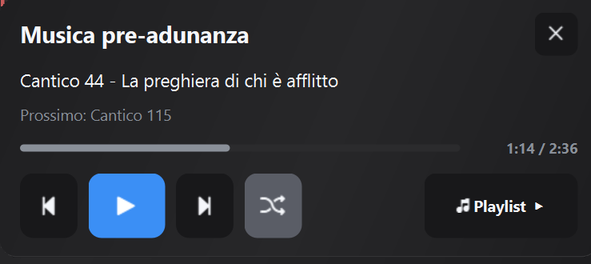
JW Time 4.0 separa le visualizzazioni: lo Schermo Pubblico serve per contenuti visibili alla sala, mentre lo Schermo Contatempo resta dedicato a chi segue i tempi.
Lo Schermo Pubblico mostra countdown, messaggio di benvenuto, scrittura dell'anno, logo e contenuti visuali su una finestra separata.
Lo Schermo Contatempo mostra orologio, countdown della parte in corso, messaggi per l'oratore e stati collegati alla gestione dei tempi. È la vista più adatta per podio, presidente o addetti al tempo.
La personalizzazione del layout è trattata separatamente nella sezione 5.3 · Personalizzare lo Schermo Contatempo, così l'uso quotidiano dello schermo resta distinto dalle impostazioni grafiche.
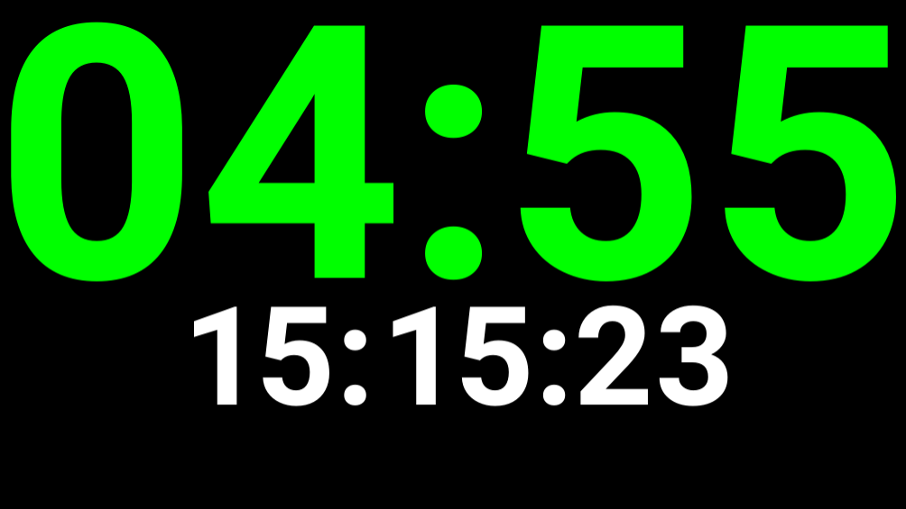
Lo Schermo Contatempo può essere personalizzato dal pulsante Personalizza nella sezione 9 · Generale.
Puoi partire da un preset già disponibile oppure modificare il layout in base alle tue esigenze. Lo Schermo Pubblico ha impostazioni proprie nella sezione 12 · Schermo; qui concentriamo il lavoro sul layout del Contatempo.
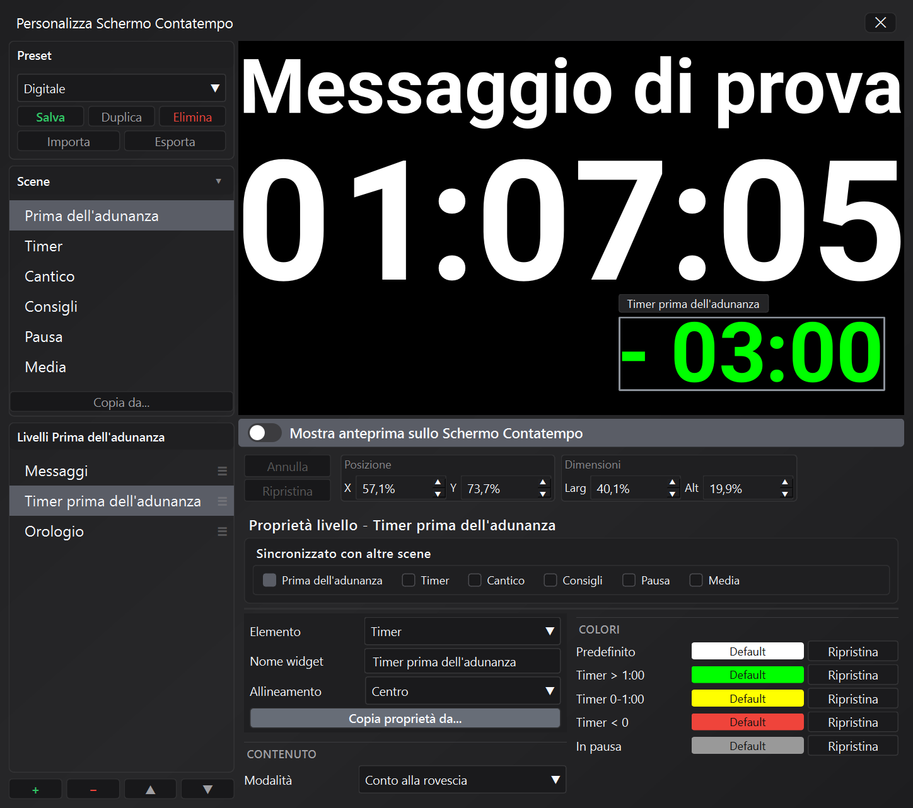
Un preset è un layout di partenza.
Puoi selezionare un preset nella sezione 9 · Generale e usarlo così com’è, oppure aprire l’editor di personalizzazione per modificarlo.
Il layout è organizzato in scene.
Ogni scena corrisponde a una situazione diversa dello Schermo Contatempo. Questo permette di mostrare un layout diverso in base al momento o al tipo di parte visualizzata.
Prima di fare modifiche, controlla sempre quale scena è selezionata.
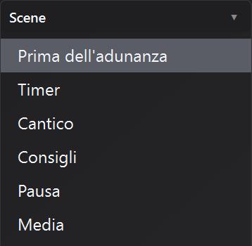
Quando premi + nel pannello Livelli, JW Time mostra i tipi di elemento che puoi aggiungere alla scena. Alcuni livelli leggono dati reali dell'adunanza e cambiano automaticamente; altri servono per costruire il layout grafico.
Non conviene mostrare nel manuale tutte le proprietà di ogni livello, perché il pannello proprietà cambia in base al tipo selezionato. Qui trovi invece cosa fa ogni livello e quando usarlo.
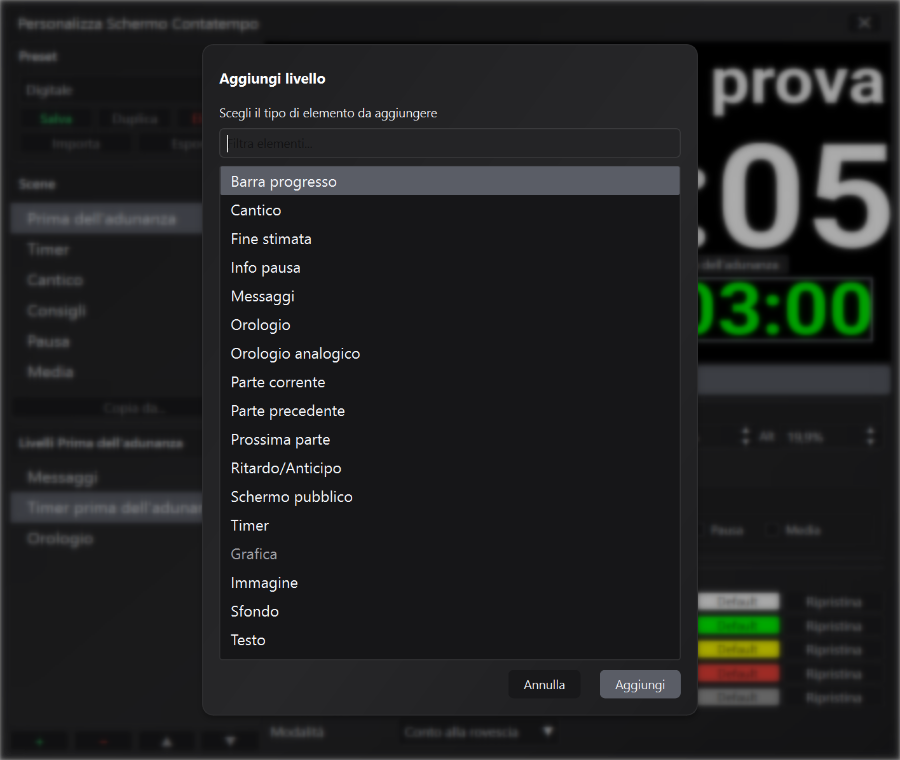
I livelli Sfondo, Testo e Immagine possono essere aggiunti più volte. Per gli altri livelli, se esiste già un elemento dello stesso tipo, l'editor ti propone di collegarlo a un'altra scena oppure di crearne uno indipendente quando previsto.
Nell’editor puoi modificare i livelli presenti nella scena selezionata.
Per ogni livello puoi intervenire su posizione e dimensioni in tre modi:
I valori X e Y controllano la posizione del livello.
I valori Larg e Alt controllano la dimensione del livello.
Tutti questi valori sono espressi in percentuale.
Nel pannello dei livelli puoi anche gestire l’ordine di sovrapposizione: ogni livello può stare sopra o sotto gli altri, determinando quale appare in primo piano in caso di sovrapposizione. Puoi cambiare l’ordine trascinando i livelli nella lista oppure usando i pulsanti ▲ e ▼ sotto di essa.
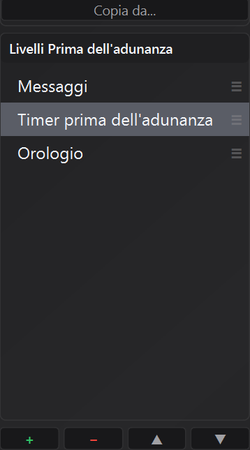
Dopo aver selezionato un livello, puoi:
Sotto l’anteprima trovi i controlli numerici X, Y, Larg e Alt per regolare posizione e dimensioni con precisione.
Dopo le modifiche, salva il layout e applicalo. Puoi riaprire l’editor in qualsiasi momento per aggiornarlo.
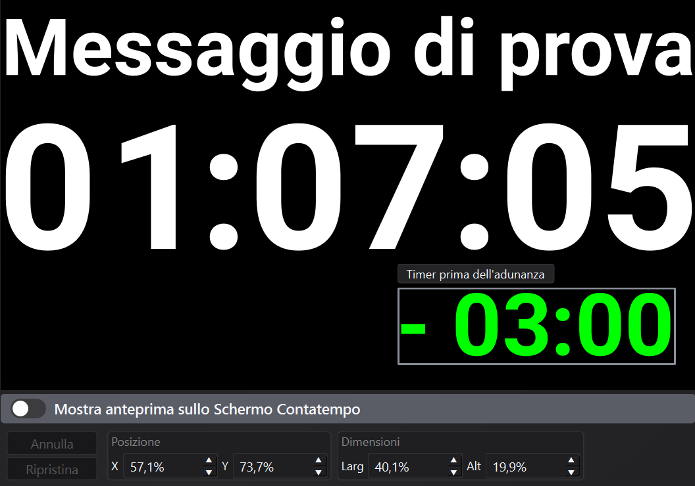
La funzione Messaggi consente di comunicare in modo discreto e chiaro con l'oratore durante l'adunanza, permettendo di avvisarlo o dargli indicazioni senza interrompere o disturbare lo svolgimento della parte. I messaggi appaiono sullo schermo del Contatempo, così l'oratore li vede in tempo reale senza distrazioni.
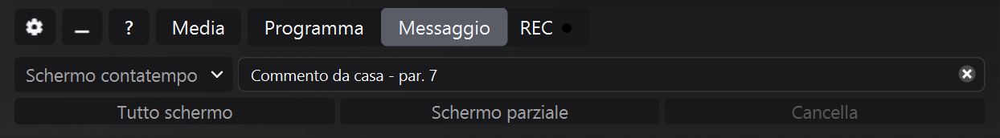
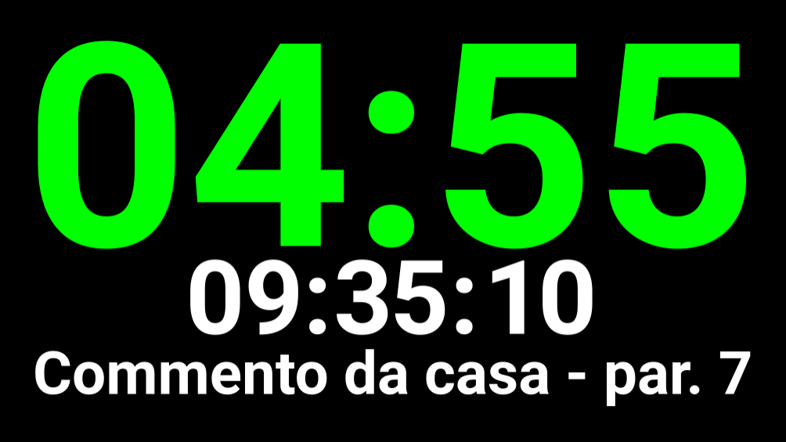
Quando si invia un messaggio, compare automaticamente una finestra di anteprima ridimensionabile e spostabile che mostra esattamente ciò che l'oratore vede nel monitor Contatempo. Questo consente di verificare in tempo reale la visualizzazione del messaggio e del timer.
Il tasto REC si trova nella barra inferiore accanto a Programma e Messaggio. Il pallino accanto al testo mostra lo stato della registrazione (attesa, attiva, pausa o conversione MP3), mentre il pannello REC fornisce controlli rapidi per aprire la cartella JWTimeREC, gestire le registrazioni manuali e monitorare i livelli audio di PC e microfono.
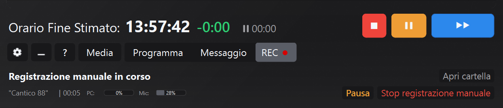
Il pannello REC raccoglie i controlli da usare senza entrare nelle impostazioni:
Quando apri REC nella barra inferiore compare un pannello sempre visibile con stato registrazione e meter audio. Qui puoi avviare/fermare registrazioni manuali, monitorare i livelli PC/Mic e aprire la cartella JWTimeREC con un solo clic.
Quando il Server Web è attivo, puoi aprirlo da un altro dispositivo della stessa rete locale tramite browser. Questo permette di visualizzare il Contatempo su proiettori, tablet o computer esterni, ed è utile per il presidente che segue il timer delle varie parti.
Per la configurazione completa del Server Web, del controllo remoto, del link remoto e del QR, vedi la sezione 15 · Connessione e Server.
Dal browser puoi:
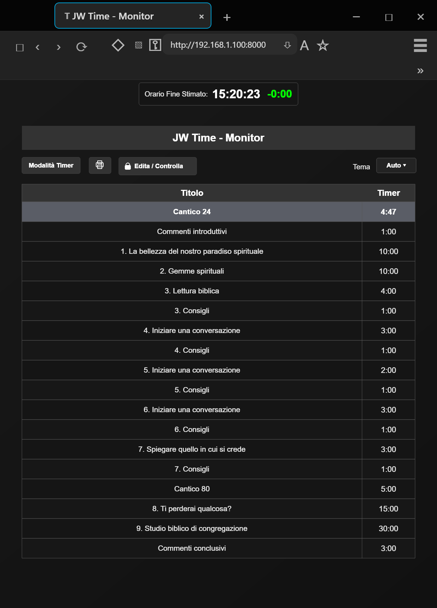
Se il controllo remoto è abilitato, dal browser puoi intervenire su timer e programma senza essere davanti al computer principale.
Le operazioni disponibili dipendono dai permessi configurati e possono includere:
Puoi aprire il Server Web inserendo l’indirizzo mostrato nell’app, oppure usando il QR se disponibile.
In base alla configurazione, possono essere previsti diversi livelli di accesso, ad esempio per sola visualizzazione oppure per controllo e modifica. Se configurato, l’accesso può richiedere un PIN.
Per la configurazione completa, vedi la sezione 15 · Connessione e Server.
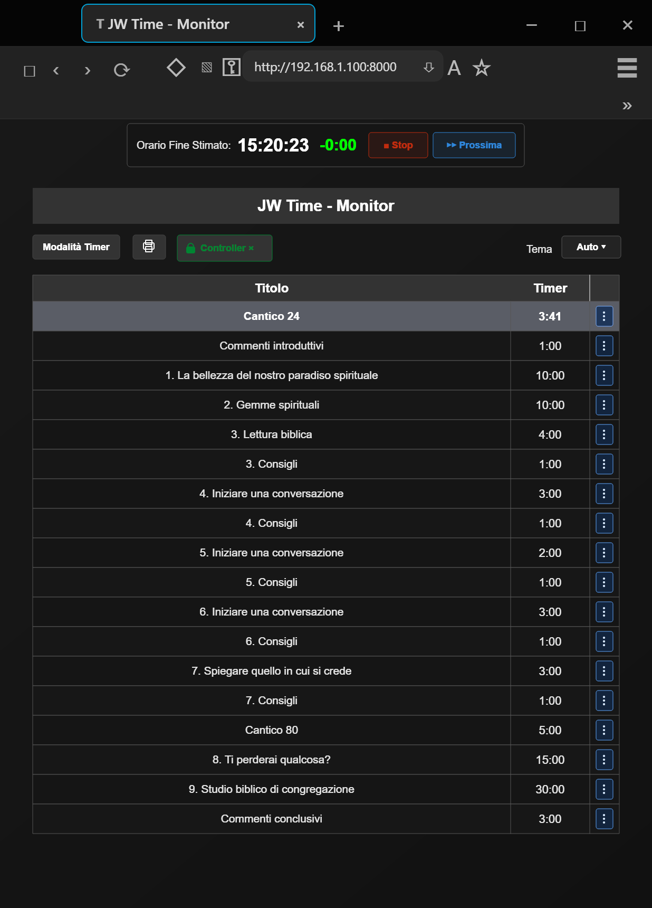
Quando chi deve seguire o controllare JW Time non si trova nella stessa rete locale, puoi generare un link remoto temporaneo. Questo scenario è utile per adunanze in videoconferenza, assistenza da remoto o gestione da un dispositivo collegato a un'altra rete.
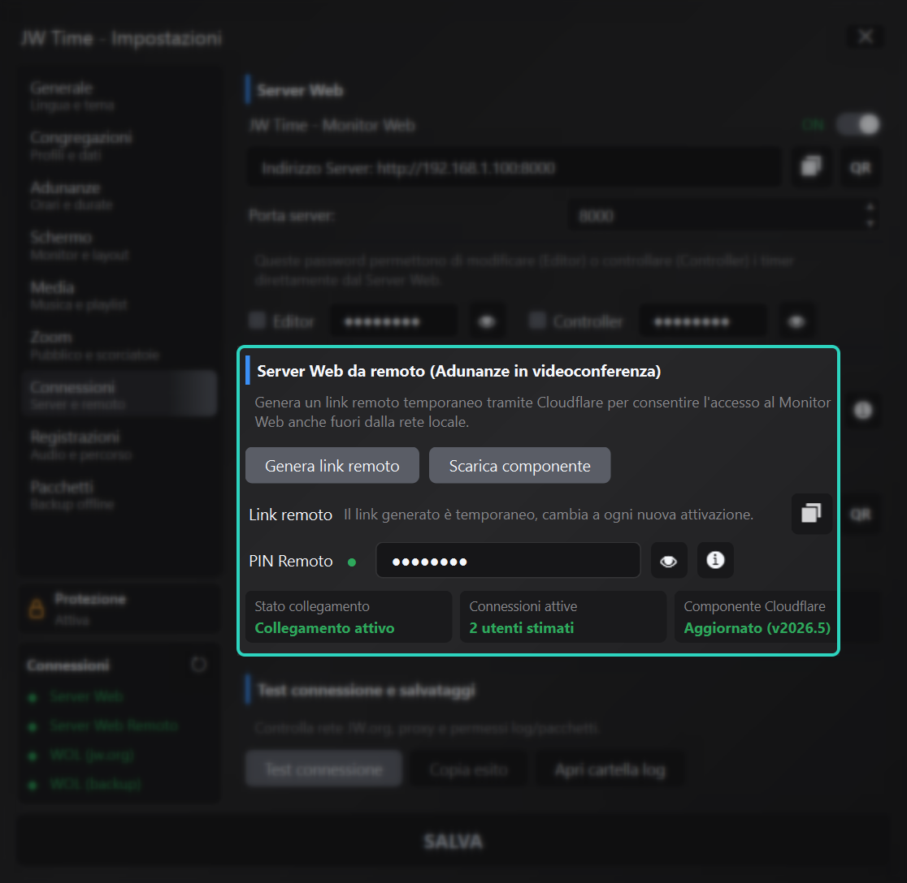
La parte operativa si configura nella sezione 15.2 · Server Web da remoto. Le impostazioni Zoom restano separate: Zoom gestisce condivisione e scorciatoie, mentre il link remoto riguarda il Monitor Web.
In questa parte puoi configurare il comportamento dell'app: impostazioni generali, profili congregazione, adunanze, Schermo Contatempo, Media, Zoom, Monitor Web & Server, Registrazioni e Backup & Ripristino.
Il tasto SALVA applica tutte le modifiche.
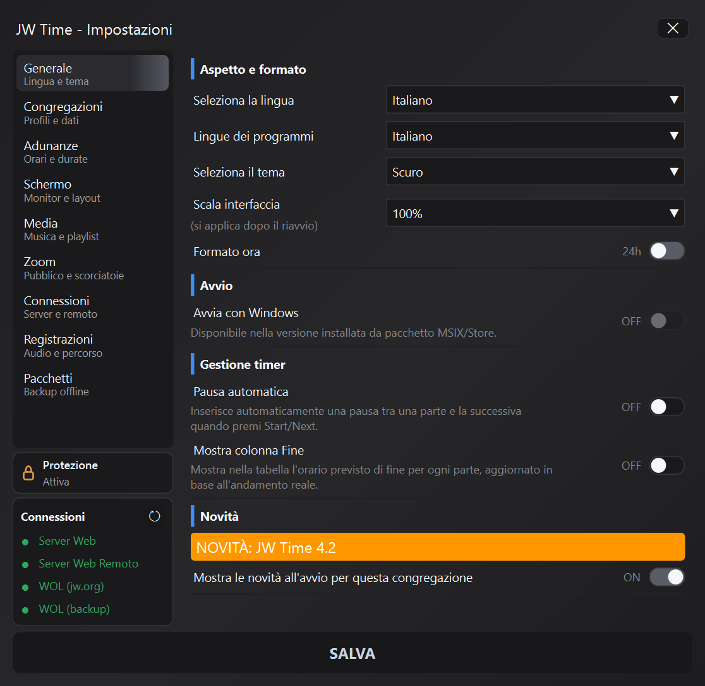
Questo pannello permette di gestire i profili congregazione. Ogni profilo può mantenere configurazioni dedicate, così JW Time può adattarsi a contesti diversi senza dover riconfigurare ogni volta finestre, media e layout.
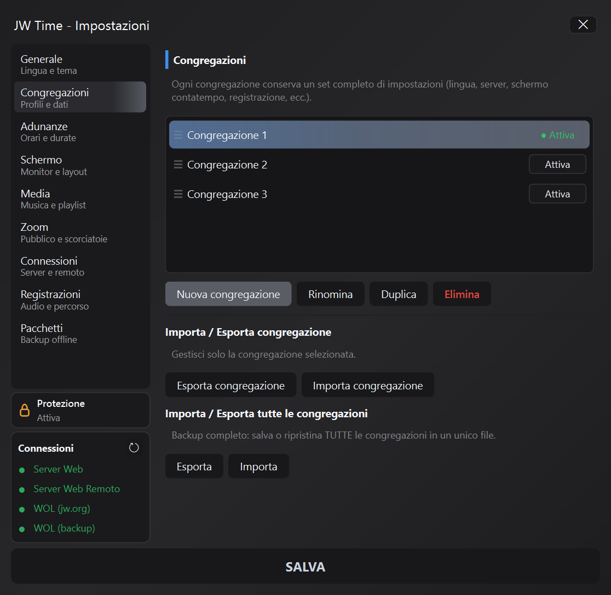
Questo pannello serve a programmare il conto alla rovescia di inizio adunanza sullo Schermo Pubblico. Imposti giorno, orario e anticipo (in minuti) con cui vuoi far partire il countdown.
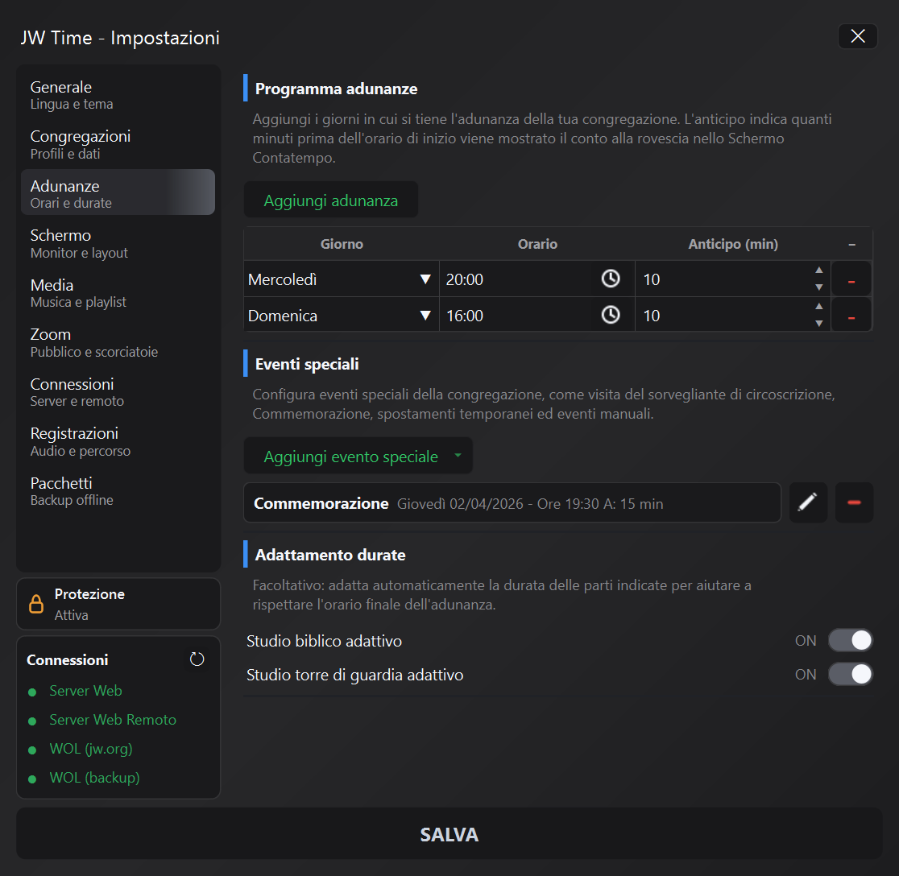
Nota: gli orari di inizio servono al countdown pubblico; l'Orario Fine Stimato dipende invece dalla scaletta e dagli eventuali adattamenti durata.
Questo pannello raccoglie le impostazioni dedicate allo Schermo Contatempo e allo Schermo Pubblico. Da qui puoi scegliere dove mostrare le informazioni, come presentarle e quali elementi rendere visibili durante l'adunanza.
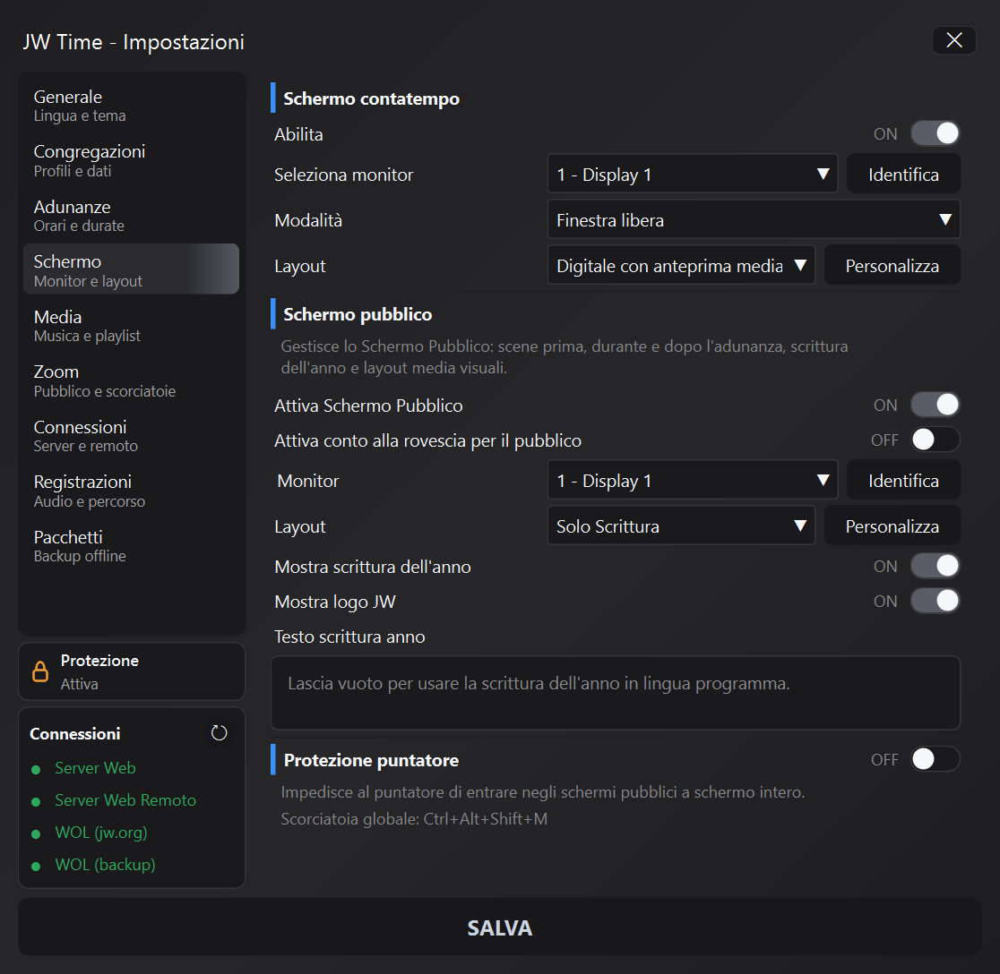
Questo pannello gestisce il comportamento della finestra Media, la cache locale e le opzioni collegate ai contenuti usati durante o dopo l'adunanza.
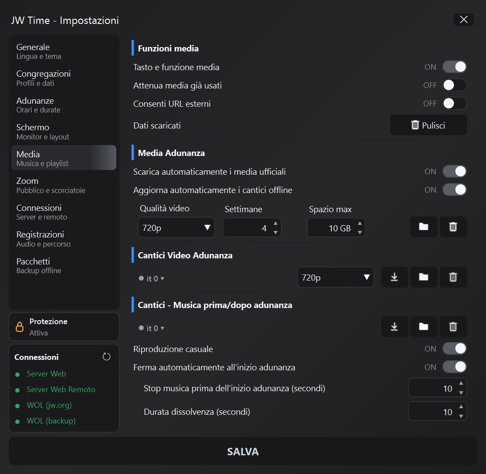
Questo pannello contiene le impostazioni utili quando JW Time viene usato insieme a Zoom o ad altre configurazioni di sala che richiedono controlli audio/video dedicati. Le opzioni qui sotto alimentano i tasti Zoom della sezione 4 · Finestra Media.
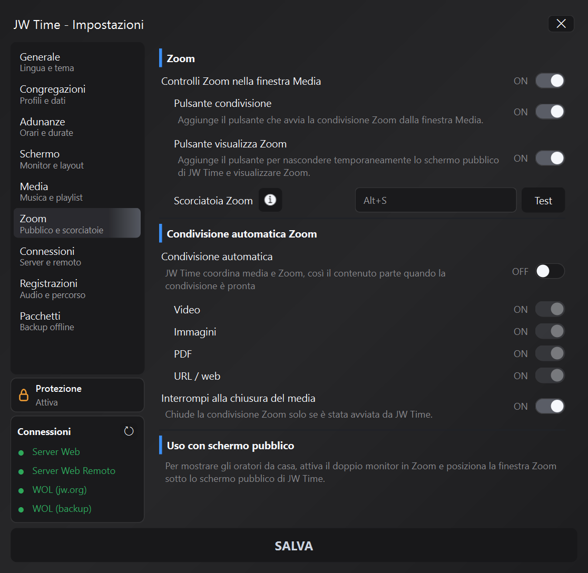
JW Time non sceglie al posto tuo la finestra o lo schermo da condividere in Zoom: invia la combinazione tasti che hai indicato in questo pannello. Per questo la stessa scorciatoia deve essere attiva anche nelle impostazioni di Zoom, preferibilmente come scorciatoia globale. Se in Zoom usi una combinazione diversa, il tasto Condivisione e la modalità Zoom Auto non possono funzionare in modo affidabile.
Prima dell'adunanza verifica il flusso completo: prepara Zoom sul monitor pubblico, posiziona sotto lo Schermo Pubblico la finestra degli oratori o la schermata duplicata di Zoom, prova la scorciatoia con Test e poi usa i controlli dalla finestra Media.
Se qualcuno deve consultare o controllare JW Time da fuori rete durante un'adunanza in videoconferenza, non si configura da Zoom: si usa la sezione 8.3 · Accesso remoto per adunanze in videoconferenza. In questo pannello restano solo scorciatoie, condivisione e gestione della finestra Zoom.
Questo pannello gestisce la connettività dell’app: il Monitor Web e il Server Web per la visualizzazione e il controllo da browser, il QR per l’accesso rapido, il controllo remoto, i test di connessione avanzati e la gestione dei log.
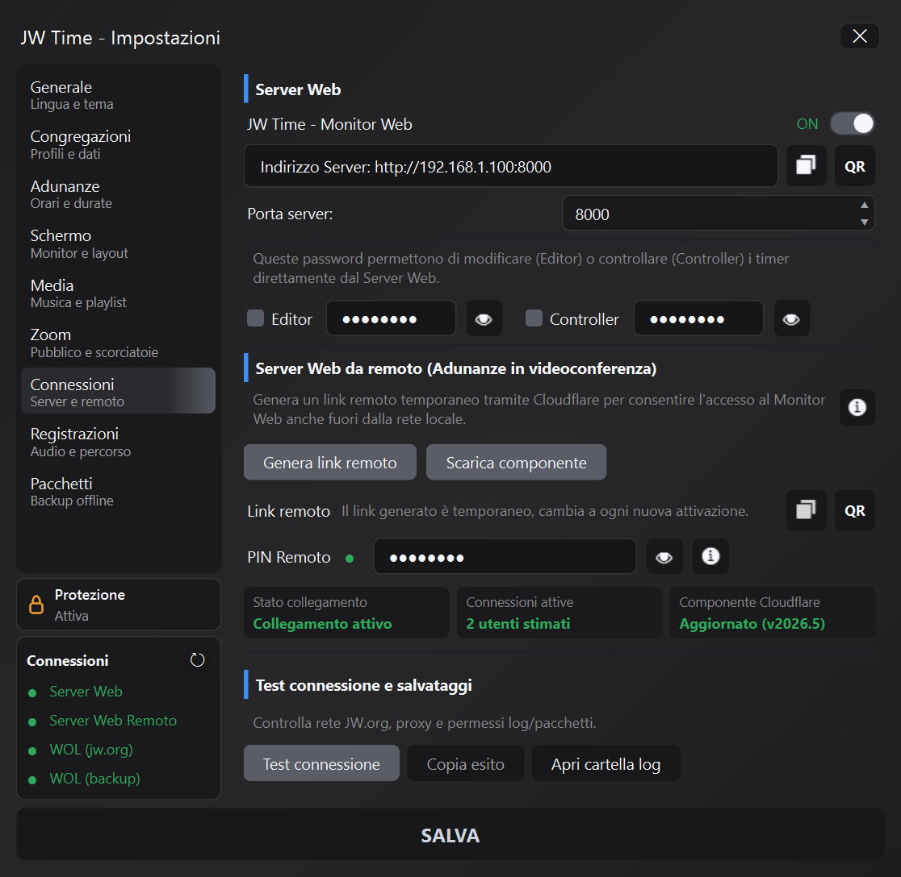
http://192.168.1.100:8000.Quando il Server Web è attivo, JW Time può essere aperto da un altro dispositivo della stessa rete locale tramite browser, per usare il Monitor Web da telefono, tablet o da un altro computer.
Questa sezione serve per rendere raggiungibile il Monitor Web anche fuori dalla rete locale, ad esempio durante adunanze in videoconferenza. Per il contesto d'uso, vedi la sezione 8.3 · Accesso remoto per adunanze in videoconferenza; qui trovi i controlli pratici.
Se la funzione è abilitata, il Server Web può essere usato non solo per la visualizzazione, ma anche per eseguire da remoto operazioni del timer e del programma. Quando è abilitato il ruolo Controller, la schermata web mostra anche i controlli per intervenire sui valori disponibili, ad esempio la durata di una parte.
Tra queste possono essere disponibili:
A seconda della configurazione, possono essere disponibili diversi livelli di accesso, in modo da distinguere la semplice consultazione dalle funzioni di controllo o modifica.
Funzione di registrazione audio delle adunanze, accessibile dalla scheda "Registrazioni" nelle impostazioni e dal tasto REC nella finestra principale.
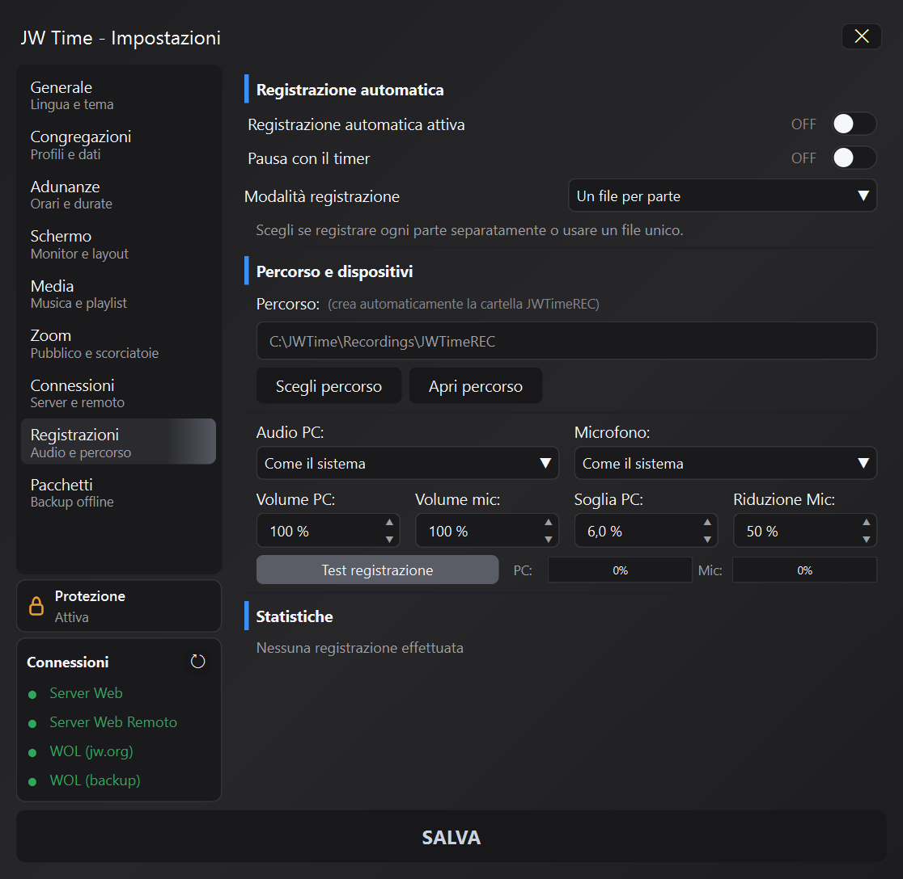
Questo pannello prepara i programmi settimanali per l'uso offline e permette di esportare o importare i pacchetti salvati.
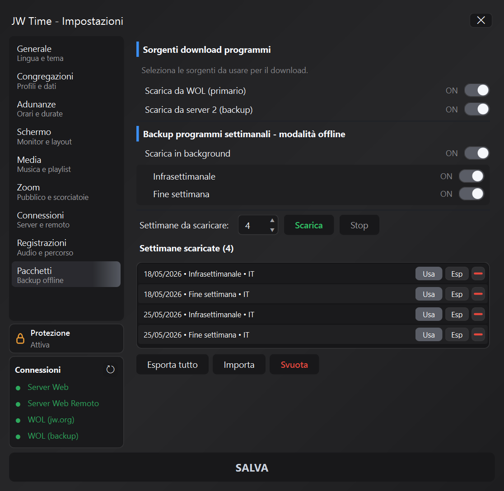